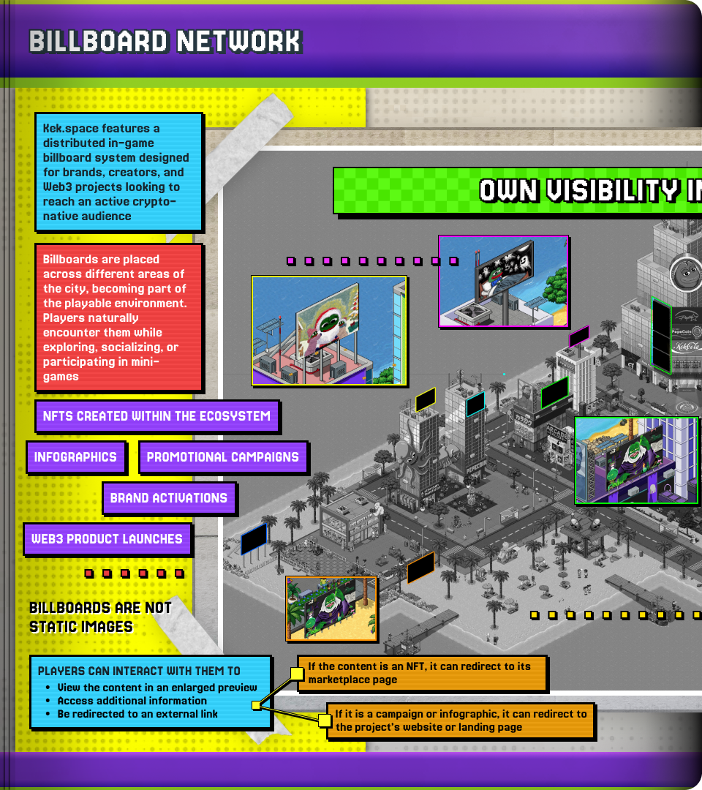
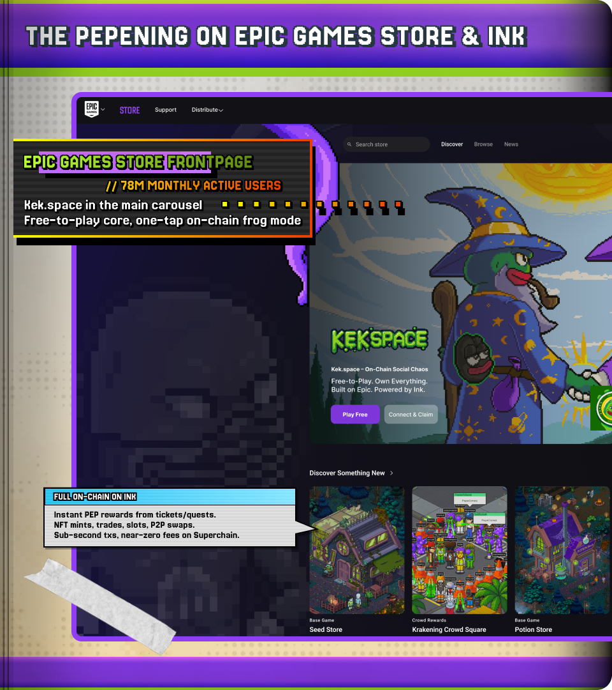

Kekspace × Ink
What we're thinking.
A live game. A live community. Ideas for building together on Ink.
What we're thinking.
A live game. A live community. Ideas for building together on Ink.Kekspace is a browser-based social world built in Unity with SmartFoxServer real-time multiplayer. Not a deck, not a prototype - a live game with people in it. 16 zones across a sprawling isometric pixel city. Six minigames live. A full social stack. And an architecture built to go onchain.

Play minigames - Survivor, Frog Bowling, Whack-A-Meme, Rock Paper Scissors, and Trash are live. Pokek (full poker with rooms, tournaments, spectator mode, and chip management) and Fishing are in progress.
Customize characters - 274+ hats, 202+ pants, 150+ outerwear, 126+ pets, 98+ shirts, 90+ backpacks, 70+ glasses and masks, 34+ necklaces across 15+ equipment slots. All pixel art created in-house.
Decorate Kekpads - private rooms with a grid-based furniture placement system. Multiple themed furniture sets including modern, pepe-themed, and premium collections.
Socialize - bubble chat, private messaging, global and room chat, emoji system, friends list, and a full moderation stack. The social layer is production-grade.
Complete quests - NPC dialog system with branching conversations, quest tracking, rewards, badges, and a recently shipped leveling system with XP progression.
Item trading, marketplace, and crafting systems are built but not yet deployed - they're waiting for the onchain layer.
400+ players showed up for The Krakening - a live Kraken-themed event inside Kekspace. No web3 launch, no marketing budget, limited gameplay. That's organic pull from a product that hasn't tried to grow yet. Ink is the growth catalyst.
The game already has wallet connection via AppKit, personal signature authentication, and an NFT display system in the codebase. Trading and marketplace systems are built but not deployed. The web3 plumbing is partially there - what's missing is the chain to deploy it on. That's the gap, and the opportunity.
Deployed on Ink, character customizations could become NFT mints. Furniture purchases could become onchain transactions. Item trades could settle P2P. Quest rewards could become token transfers. The base is built - Ink is where the economy comes to life.
Ink's infrastructure is exactly what makes this viable for a game - low fees for frequent small transactions, fast minting for real-time event drops, Kraken Wallet integration for near-zero onboarding friction, and account abstraction tooling that lets retail players skip the complexity entirely.
Kekspace has an in-game billboard system placed across high-traffic zones in the city. On Ink, billboards become rentable onchain - projects and communities pay to advertise inside a living world, reaching engaged crypto-native users where they already spend time. Players interact with billboards to view expanded content, access external links, or browse collections. The billboard network turns Kekspace into a distribution and advertising platform for the entire Ink ecosystem.

These aren't commitments or a roadmap. They're ideas for what building on Ink could look like. Some might be the right starting point. Some might be phase two. Some might need to be completely rethought. That's the conversation we want to have.
A landing zone inside Kekspace where users arrive in guest mode, connect a wallet, bridge into Ink, verify their identity, and get routed into their first action - all inside the game world. Not a dashboard. A place. The kind of first experience that makes Ink feel like a destination worth coming back to.
Terminals that anyone - players, communities, room owners - can install in their own rooms. The game already has a full poker system with rooms, tournaments, and chip management - the social trading UX patterns exist. Builder Codes make the distribution monetizable. Nado's own messaging says infrastructure isn't the bottleneck anymore, distribution is. This is distribution.
A bank in the city where you can see your collateral, watch your health factor, and understand what happens if the price moves - without reading a spreadsheet. Tydro is one of the most important financial apps on Ink. If Kekspace can make it easier for ordinary users to understand and trust, that's useful for deposits, borrowers, and the whole ecosystem.
Pool discovery, simple stable vs. volatile explainers, deposit flows - all presented visually instead of as a table of numbers. Protocols get a space to attract LPs. Users understand what they're doing before they do it.
Badges, room access, cosmetic unlocks - all tied to real Ink activity. Your InkScore becomes a nameplate. Your Verify status unlocks rooms. Your wallet history shapes how the world sees you. Onchain reputation becomes social currency inside the game.
Part chatroom, part website, part event venue. Embedded protocol terminals. Audio and video for AMAs, podcasts, and live streams. Token-gated or Verify-gated access. The Kekpad private room system, SmartFoxServer networking, and furniture placement engine already exist - community rooms are an extension of infrastructure that's live in production. Every Ink project gets a space that's more interesting than a Discord server.
We didn't just imagine what brand integration could look like inside Kekspace. We built it. With Kraken.
The Krakening was a live event - themed outfits, environmental lighting, custom quests, limited-edition collectibles. Hundreds of players showed up at midnight. The items are still being traded. Not a banner ad. A living brand experience inside a living world.

The world transforms with seasons. Halloween turns everything dark with mazes, cursed items, and themed quests. Christmas covers every zone in snow with an advent calendar and daily gifts. Each event brings people back and gives new players a reason to show up. On Ink, each event becomes a predictable burst of onchain activity - mints, trades, rewards, social media.
Not a banner ad. A living brand experience inside a living world.
The idea that keeps us up at night. Not necessarily part of a first phase - but the kind of thing that could make Ink genuinely different from every other L2.
Players gather in a room. A founder configures the launch at a chest. Balloons drop in timed waves around the room. You move to pop them for a chance at an allocation. The event continues until the bonding mechanism or fill condition completes. Liquidity migrates.
Fair by design - per-wallet wave limits, random drop positions, Verify-gated rooms, cooldowns, VRF-backed randomness. No sniping, no bundling, no cabal advantage. Just live spectacle, social ceremony, and built-in virality. The kind of thing people record and share.
Kekspace is heading for the Epic Games Store - 78 million monthly active users, free to play. With Ink as the onchain layer, every transaction settles on Kraken's L2. Retail gamers exposed to an Ink-native game where onchain ownership is baked into the experience from day one.

A live game ready for distribution. A reason for Kraken Wallet users to actually bridge to Ink - not because a dashboard told them to, but because there's a world on the other side. Real transaction volume from real usage. A culturally distinctive product that gives Ink a story no other L2 has.
The onchain infrastructure to make the economy real. An ecosystem of live protocols to integrate with. A community and distribution network to grow into. The thing that turns a fun game into an actual platform.
We see this as co-builders, not as a project pitching for support. Grow through the ranks on Ink together. Build, ship, measure, share the story publicly. If this works, it becomes the case study for every builder that comes after.
We've never seen this as a pitch. We recognize you guys as builders too - this has always been about being co-builders. Not us asking for something, but figuring out what we can build together. What excites you, what fits, what should we build first - that's the conversation.